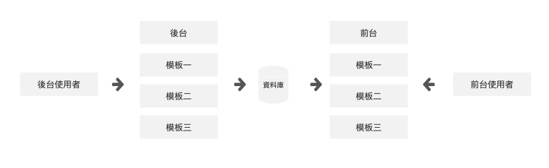

資料收集、市場分析、功能性規劃、流程規劃
為何需要規劃內容管理？他可以在專案中做到什麼？
後台功能：輸入資訊、輸入圖片、輸入影片、允許HTML編輯器、儲存、設定展示時間
前台功能：預設3個展示模板、顯示資訊、顯示圖片、顯示影片、執行展示時間
模板一前台樣式：分為三部分
一：左側為幫助中心menuTree 點擊後能切往不同模板。
二：為頁面中部只簡述大致內容，點選右方看更多按鈕便能進入內頁觀看全文。
三：上方為按鈕點選按鈕切換下方顯示內容。
模板一後台設定：功能為：新增、編輯、刪除
需新增內容主標題、再新增標題、新增時間、與內容。新增結束後系統為判讀時間是否該顯示前台。
模板二前台樣式：分為三部分
一：左側為幫助中心menuTree 點擊後能切往不同模板。
二：頁面中部以收合模板，點選標題後下方內文便會打開，再點擊一次便會收起。
三：上方為按鈕點選按鈕切換下方顯示內容。
模板一後台設定：功能為：新增、編輯、刪除
需新增內容主標題、再新增標題、新增時間、與內容。新增結束後系統為判讀時間是否該顯示前台。
模板三前台樣式：分為兩部分
一：左側為幫助中心menuTree 點擊後能切往不同模板。
二：點開後頁面便會顯示全部文章內容
模板一後台設定：功能為：新增、編輯、刪除
需新增內容主標題、再新增標題、新增時間、與內容。新增結束後系統為判讀時間是否該顯示前台。
｜ 專案完成度：100% ｜
網頁上無法提供更詳細SPEC
請履歷聯絡